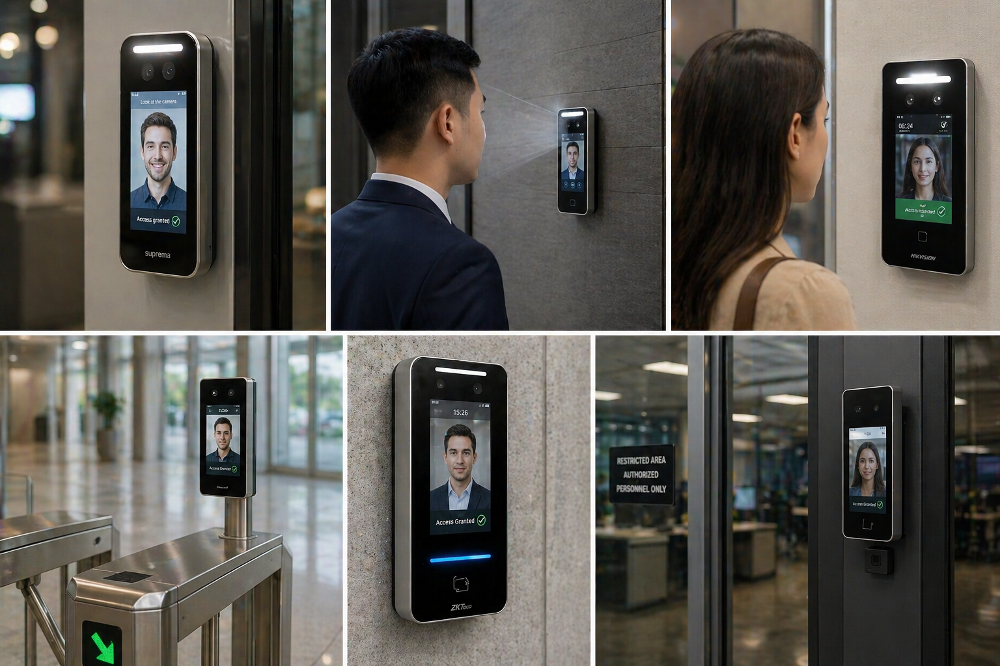

Executive and private areas
Add stronger identity verification for offices, leadership areas, and spaces with elevated confidentiality needs.
Kryos deploys biometric facial recognition readers for environments that need smoother throughput, stronger assurance, and cleaner audit trails across sensitive or higher-traffic access points.
In the right environment, facial recognition can improve both security posture and day-to-day movement through critical spaces.
Add stronger identity verification for offices, leadership areas, and spaces with elevated confidentiality needs.
Support restricted access where audit visibility and user certainty matter more than generic credentials.
Deliver a more modern arrival and entry process without sacrificing policy control or operator visibility.
Improve event history and oversight for environments that need a better record of access activity.
Support exceptions with layered credentials and practical workflows for visitors, admins, and edge cases.
Manage identity, permissions, and device behavior from a unified system instead of isolated hardware.
Biometrics are not for every opening. They are most effective where throughput, identity confidence, and controlled access matter the most.
Touchless readers become more compelling when teams can see how they fit at front doors, restricted rooms, and cloud-managed operations.

Use facial recognition where queues, user experience, and stronger identity verification all matter at the same time.
Enrollment, event visibility, and device control work best when biometrics are connected to the same secure platform as the rest of the property.